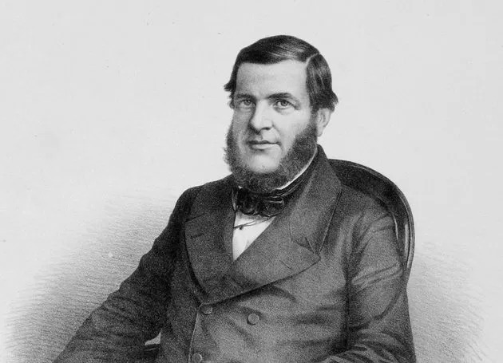
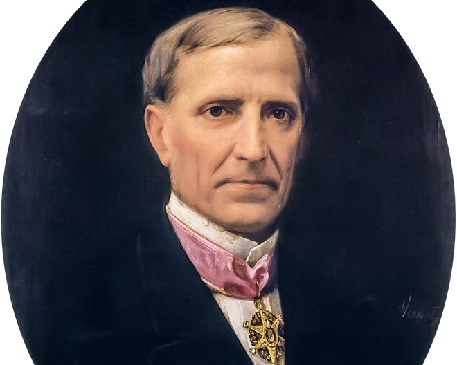

Introdução
Este site é dedicado ao estudo e análise das transformações políticas, sociais, culturais e econômicas ocorridas entre 1820 e 1880, com foco principal na década de 1850. Aqui, você encontrará informações sobre os princiapais acontecimentos de cada década. Nosso objetivo é oferecer um conteúdo claro e objetivo para estudantes e pessoas interessadas nesses momentos que marcaram a nossa história. Explore nosso site e conheça mais sobre algumas décadas do século XIX
Linha do tempo
Essa é a linha do tempo do nosso site, nela contém todas as décadas de 1820 a 1880, clique em uma década para saber mais sobre ela
1820
1830
1840
1850
1860
1870
1880
O Brasil na Década de 1850
A década de 1850 foi um período de grande relevância na história do Brasil, marcado por mudanças políticas, econômicas e sociais que moldaram os rumos da nação. Durante esses anos, o país vivia sob o Segundo Reinado, com Dom Pedro II no trono, consolidando sua posição como uma figura central de estabilidade em um período de desafios e inovações.
Do ponto de vista econômico, essa década destacou-se pelo início do processo de modernização da infraestrutura nacional. Um dos marcos foi a inauguração da primeira ferrovia brasileira, a Estrada de Ferro Mauá, em 1854, simbolizando os primeiros passos rumo à industrialização. No setor agrícola, a produção de café expandia-se rapidamente, tornando-se o principal produto de exportação e consolidando o Brasil como um dos maiores exportadores do mundo.
No campo político, o Brasil enfrentava tensões internas, como o declínio do tráfico transatlântico de escravizados, que culminou na promulgação da Lei Eusébio de Queirós em 1850. Essa medida foi um divisor de águas na luta contra a escravidão, embora o sistema escravista ainda persistisse nas décadas seguintes.
A década de 1850 também trouxe avanços em termos de urbanização e organização social, especialmente no Rio de Janeiro, então capital do Império. Novas iniciativas de saneamento começaram a surgir, visando combater epidemias que frequentemente assolavam a cidade.
Esses são apenas alguns dos acontecimentos marcantes que abordaremos em detalhes ao longo do site. Por meio de uma análise aprofundada, exploraremos como cada um desses eventos ajudou a definir os caminhos que levaram o Brasil ao final do século XIX.
Principais acontecimentos na decada de 1850
Lei de terras
A Lei de Terras serviu de base para que latifundiários recorrem ao governo e até aos tribunais para
ampliar suas propriedades.
Saiba mais
Lei Eusébio de Queirós
Essa lei promulgada em 1850 teve como objetivo principal a proibição do tráfico de escravos no Brasil.
Saiba mais
Barão de Mauá
O Banco foi criado com o intuito de propiciar capitais para o desenvolvimento do país, que
então tinha sua economia baseada na agricultura e com mão de obra escrava.
Saiba mais
Guerra da Prata
A Guerra da Prata foi um conflito que envolveu o Brasil, o Uruguai e a Argentina. O Brasil interveio para proteger seus interesses na Bacia do Prata.
Saiba mais
Lei de terras
A Lei de Terras, promulgada em 18 de setembro de 1850, foi um marco na legislação fundiária brasileira, regulamentando a aquisição de terras no Brasil e encerrando a prática de doação e distribuição gratuita que se iniciou com as capitanias hereditárias. A lei visava controlar a terra, dificultando o acesso de pequenos produtores, em um contexto de mudanças econômicas, como o fim do tráfico de escravizados e a transição para uma economia voltada para a exportação de café. As elites agrárias, preocupadas em manter seu monopólio, pressionaram pela criação de uma legislação que favorecesse grandes proprietários.
Os impactos da Lei de Terras foram profundos, consolidando a concentração fundiária e perpetuando a desigualdade no acesso à terra. Ela também incentivou a imigração europeia, mas sem garantir a posse de terra aos imigrantes, que passaram a trabalhar como assalariados nas lavouras. Povos indígenas, quilombolas e camponeses pobres foram marginalizados, pois não puderam regularizar a posse de terras que já ocupavam.
Historicamente, a lei contribuiu para a persistência das desigualdades fundiárias no Brasil, dificultando a reforma agrária e promovendo a urbanização desordenada, com o êxodo rural e a formação de favelas. A priorização de grandes propriedades para exportação consolidou um modelo de desenvolvimento que favoreceu interesses externos, em detrimento da agricultura familiar. Assim, a Lei de Terras de 1850, ao consolidar o controle da terra pelas elites e restringir o acesso popular, deixou um legado que ainda influencia os desafios fundiários e sociais do Brasil contemporâneo.

Lei Eusébio de Queirós
A Lei Eusébio de Queirós, promulgada em 4 de setembro de 1850, foi um marco na luta pela abolição da escravidão no Brasil, ao proibir o tráfico de escravos. Elaborada por Eusébio de Queirós, Ministro da Justiça, durante o Segundo Reinado, a lei surgiu em um contexto de pressões internas e externas, como a Lei Bill Aberdeen (1845), sancionada pela Inglaterra, que autorizava a Marinha britânica a apreender navios negreiros brasileiros, e o temor das elites brasileiras sobre revoltas de escravizados, como a Independência do Haiti e a Revolta dos Malês.
Apesar de proibir o tráfico, a Lei Eusébio de Queirós teve consequências ambíguas. As elites agrárias, especialmente os fazendeiros, reagiram negativamente, temendo a escassez de mão de obra barata. Simultaneamente, a aprovação da Lei de Terras (1850) consolidou o controle fundiário, restringindo o acesso à terra para os mais pobres, e o tráfico interno de escravizados aumentou, com a negociação de escravos dentro do território brasileiro, elevando seus preços.Embora tenha sido uma medida gradual no processo de abolição da escravidão, a Lei Eusébio de Queirós foi um passo importante em um caminho que levaria, em 1888, à abolição total da escravidão com a Lei Áurea. A lei, embora não tenha resolvido os problemas estruturais, representou um avanço significativo no enfraquecimento do tráfico de escravizados no Brasil.

Barão de Mauá
Irineu Evangelista de Sousa, mais conhecido como Barão de Mauá, foi uma das mais ilustres figuras da história brasileira.Destacou-se como comerciante, armador, industrial, banqueiro, diplomata e um dos grandes opositores da escravatura e do tráfico de escravos, bem como o precursor do liberalismo econômico no Brasil.Dividido entre as atividades de industrial e banqueiro, aos quarenta anos Irineu já era um dos homens mais ricos do Império.
Dois dos principais acontecimentos dessa década foram relacionados a ele como a primeira ferrovia do brasil.
A Estrada de Ferro Mauá, como é conhecida hoje em dia, e oficialmente denominada Imperial Companhia de Navegação a Vapor e Estrada de Ferro de Petropolis, foi a primeira ferrovia a ser estabelecida no Brasil, a terceira da América do Sul. A ferrovia foi construída para conectar o Porto de Mauá, na Baía de Guanabara, ao sopé da Serra da Estrela, na região de Petrópolis, no estado do Rio de Janeiro. O objetivo principal era facilitar o transporte de cargas e passageiros do interior do estado para o Rio de Janeiro, especialmente para o transporte de café, um dos principais produtos de exportação do Brasil na época.Foi inaugurada em 30 de abril de 1854.
A criação do banco do brasil, Em 1851, o empresário Irineu Evangelista de Sousa (futuro Barão de Mauá) criou no Rio de Janeiro uma instituição privada chamada Banco do Brasil (a 2ª com esse nome), que imediatamente se transformou na maior empresa do ramo no Império.Em maio de 1853, d. Pedro 2º (1825-1891) usou a Fala do Trono (discurso que os imperadores do Brasil proferiam no Parlamento no início e no fim de cada ano legislativo) para pedir aos senadores e deputados que, com urgência, autorizassem o governo a criar um banco nacional. foi determinado pela Lei nº. 638, de 5 de julho de 1853, a criação do novo Banco do Brasil, através da fusão do Banco do Brasil de Mauá com o Banco Comercial do Rio de Janeiro (fundado em 1838).

Guerra da prata (1851-1852)
A Guerra contra Oribe e Rosas, também conhecida como Guerra do Prata, ocorreu entre 1851 e 1852 na região do Rio da Prata, formada pelos rios Paraná e Uruguai. Esse conflito se inseriu no contexto das tensões que o Brasil já havia vivido na Guerra da Cisplatina (1825-1828), que resultou na criação do Uruguai. O protagonista dessa guerra foi Juan Manuel de Rosas, ditador de Buenos Aires, que governava de maneira autoritária e ambiciosa, com planos de recriar o Vice-Reinado do Prata, abrangendo territórios do Uruguai, Paraguai e Bolívia, para tornar a Argentina a principal potência da América do Sul.Rosas tentou conquistar o Uruguai, mas, após falhas iniciais, obteve sucesso com a ajuda de Uruguaios e argentinos liderados por Oribe, resultando na morte de mais de trinta mil pessoas e na fuga do presidente uruguaio Rivera para o Brasil. Com o Uruguai sob seu controle, Rosas voltou sua atenção para o Sul do Brasil, o que levou o Império Brasileiro, sob Dom Pedro II, a intervir. O Brasil formou uma aliança com Bolívia, Paraguai, Uruguai e as províncias argentinas de Entre Rios e Corrientes, preparando-se para o confronto.Em 19 de outubro de 1851, Oribe se rendeu sem luta, e as forças brasileiras seguiram para a Argentina, onde, em 1º de fevereiro de 1852, derrotaram as tropas rosistas em uma primeira batalha. Dois dias depois, na Batalha de Monte Caseros, o exército aliado, liderado por forças brasileiras, venceu novamente, e Rosas fugiu para o Reino Unido.
Essa guerra foi fundamental para o Brasil, pois, além de consolidar a estabilidade política e econômica do Império, contribuiu para a integração do Rio Grande do Sul ao Brasil, após a participação ativa do estado no conflito. A vitória brasileira também afirmou a hegemonia do país na região, além de enfraquecer a liderança de Rosas na América do Sul.